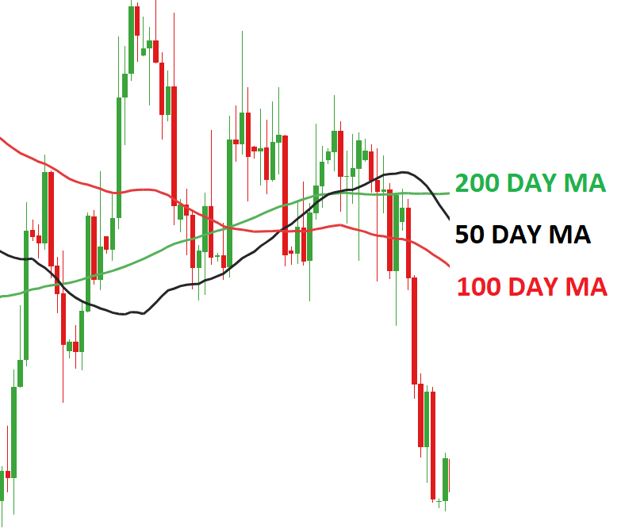
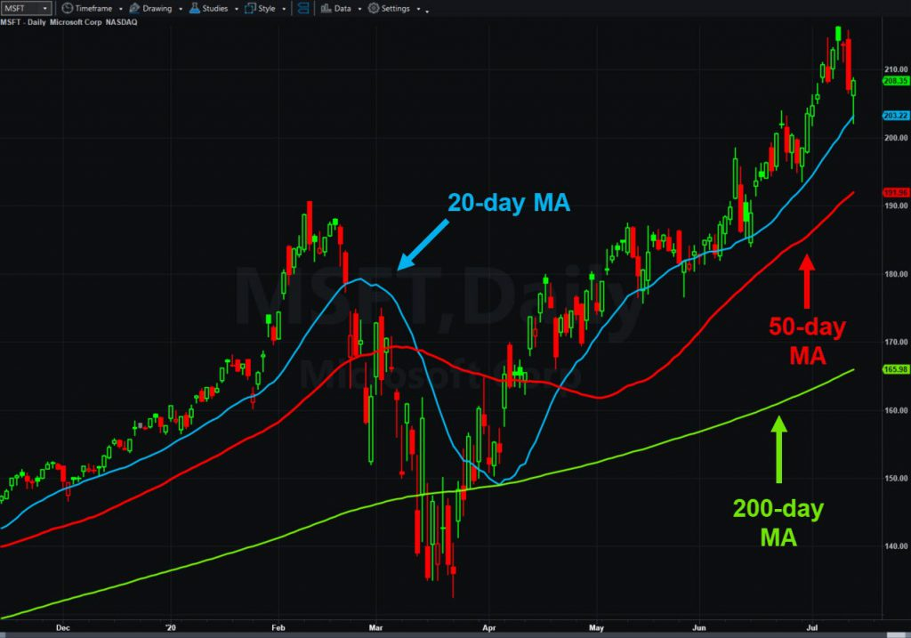
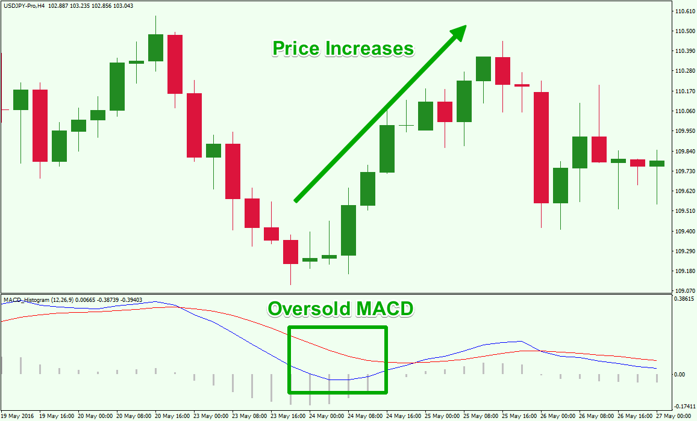
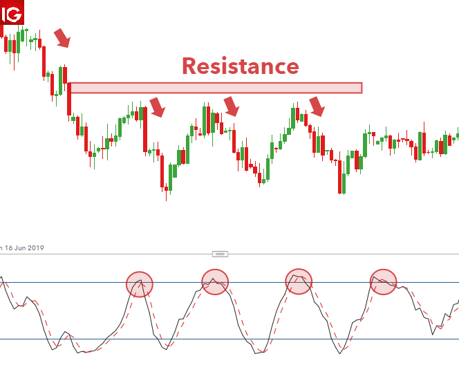
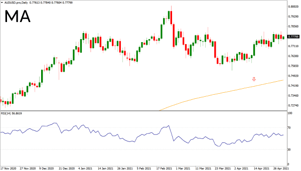
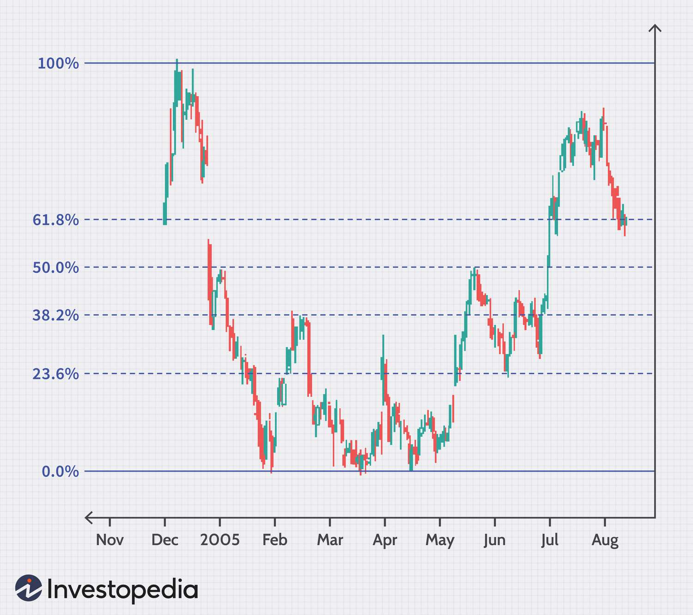

What are Technical Indicators In Trading?
A technical indicator is used to show how price, volume and open interest on a stock that traders can use who follow technical analysis.
With this, Indicators can be used to help traders have more edge when they place trades. Only thing about technical indicators is that they are
lagging indicators. What i mean by this is price can have already reached a supply zone but certain indicators wouldnt give you the confirmation to
sell until the price action move has already moved. Alot of new traders will soley rely on technical indicators to give them confirmation to put a trade on
yet or not. Technical indicators should only be used to give you a better edge in a trade. The trader should make sure the price action is aligned with
with the technccial indicator.
What Are The Best indicators To Trade With?
There are tons of technical indicators out there that different traders use. There are 5 main technical that majority of traders use.
- Moving Average
- Mac D
- Stochastic
- Average True Range(ATR)
- Fibonacci
Moving Average

The Moving Average is used to help decide what trend price action is in. The moving averages are calculated by adding up all previous price data points
during a specific period and dividing the sum by the time period. In the picture above you can see it has 3 different lines with numbers next to MA.
The black line that has 50 MA next to it is indicating price action over the last 50 candlesticks or days. Of course this will greatly depend on what
timeframe you are trading off of. A trader that is day trading vs a trader that is swing trading moving averages will be different. They will be different because
the moving averages that are moving on 15 minute time frames will be moving alot faster than moving averages on an 4 hour timeframe.
How to use Moving Averages in Trading?
When it comes to choosing the right moving averages it can be tricky. The most famous moving averages that traders use wuith price action is the 20, 50, and 200
MA. These are the most significant because they are able to tell short term trends, intermdiate trends, and long-term trends.

20 Moving Average
The 20 moving average is used to asses the short term trend of price action. The 20 ema line can be used as a reversion to the mean after a extented trend has been formed.
When price action is above the 20 ema it is seen to be in a strong bullish trend. When The price is underneath the 20 ema it is seen to be in a strong bearish trend.
When taking trades you want to make sure price action is as close to the 20 ema as possible. In a strong uptrend you can often use the 20 as leverage to know when
to buy on pull backs of strong trends and you can use it to know when to sell in strong downtrends. In the picture above, you can see that when the price action
was in a strong uptrend, when it came close to the 20 MA it went higher.
50 Moving Average
The 50 Moving Average can be looked at as key demand or supply level in the intermediate trend. When price action is trading above the 50 MA it is looked at as those companies
are in a overally healthy for investors to be buying. When price action is trading below the 50 MA it is look at as stocks are nit healthy and investors shoulkd wait to buy. For traders and investors the 50 Moving avg could be looked
as a good strategy to profiting at great key levels. For both buying and selling we want to see the price action get as close as it can to the 50 MA as possible before we look to take a trade.
200 Moving Average
The 200 MA is a key level to show the overall long term trend. This is widely used by investors because the 200 MA is used to show the true value of a company. The closer price action gets to the 200 EMA
prices are seen to be down 5-20%. These will create great buying opportunities for investrors.
MACD
Also known as Moving Average Convergence Divergence, the MACD is an indicator that detects changes in momentum by comparing two moving averages. Convergance
means the two moving averages are coming closer together. The closer the moving averages are to each other it shows that momentum is decreasing. Divergance means
the two moving averages are moving farther away from each other. The further away they move from each other it shows that momentum is increasing. You can use the MACD in trading
because when it gets to a certain level you can see if the momentum is slowing down with the divergance. You shouldnt only use the MACD by itself to make trading decisons, this will be greatly used to help give you an advantage.

Stochastic Oscillator
The Stochastic indicator compares the closing price of a specific assest to a range overtime. It uses a scale that reads 0-100. A reading below 20 represents an oversold market, and a reading above 80
is seen as a overbought market. Traders use this tactic to try to time when the market can make a key reversals.

Average True Range (ATR)
The Average True Range indicator measures market volitility of an entire range of an assests price. It is measured on a 14 day (or whatever timeframe you are on), traders will use it to help them with risk management.
Otherwise known as a stop loss, this indicator will give you a certain number when it is at a range. Traders are either adding this number to the price range when it comes to supply, or subtracting
the number from the price range if its at demand. For example in the picture above you see on the bottom screen it says, "RSI", than has numbers next to it. This is the price traders use to help them dictate where they will need to exit if they are wrong.
If this chart was Apple, and say the price is at 150$, and it is sitting right on demand.

Fibonacci
Fibonacci was developed and used by indian mathematicians, in specific mathematician Acarya Virahanka, he believed that numbers move up and down in certain number ratios.
The percantage numbers he believed they move in were: 23.6%, 38.2%, 50%, 61.8%, and 78.6%. This indicator is important because these are all numbers where key levels
may act as support or resistance. The most used ratios traders use are 23.6%, 38.2%, 50%. When drawing the Fibonacci you want to first identify the market condition. once you identify
the trend you must find the swing high and the swing low. Than draw the Fibonacci indicator and draw the swing highs and swing lows that coincides with the tredn you are trading.
